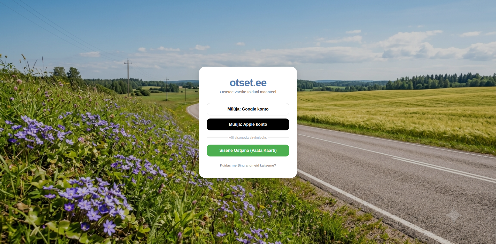

Igal suvel täituvad Eesti teeperved isetehtud siltidega, mis kutsuvad möödasõitjaid maasikaid ostma, talupoodi sisse põikama või värsket suitsukala proovima. Kohaliku toidu väärtustamine on imeline, kuid füüsiliste siltide püstitamine riigiteede äärde peidab endas tõsiseid väljakutseid.
Transpordiameti andmetel seab loata ja valesti paigaldatud teeperve reklaam ohtu liiklusohutuse. Sildid hajutavad autojuhtide tähelepanu ja võivad põhjustada äkilisi manöövreid.
Seadus nõuab teekaitsevööndisse siltide paigaldamiseks ametlikku kooskõlastust. Paljude väiketootjate jaoks on see aga liigne bürokraatia – loa ooteaja peale võib lühike maasikahooaeg juba läbi saada.
Projekt Otsetee sündis täpselt selle konflikti lahendamiseks. Meie eesmärk on asendada ohtlikud ja segadust tekitavad puidust sildid ühe kaasaegse digitaalse kaardiga.
Autojuhid näevad müügipunkte rakendusest juba enne teeotsa. Ei mingeid ootamatuid pidurdamisi – vaid sujuv ja planeeritud peatuse tegemine.
Müüjad ei pea taotlema lube ega ootama nädalaid. Nad saavad oma müügipunkti ja tooted märkida kaardile sekunditega – täpselt siis, kui kaup on valmis.